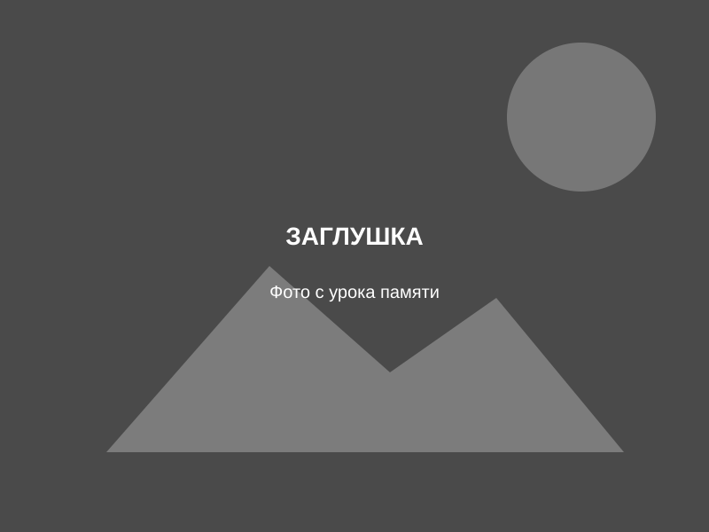

Урок памяти о подольских курсантах
9 октября в библиотеке на Плеханова прошёл урок памяти, посвящённый подвигу подольских курсантов. Школьникам рассказали о молодых ребятах немногим старше них, ценой своих жизней задержавших врага на подступах к Москве.
После того как войска Красной армии попали в Вяземский котёл, на передовую были брошены курсанты военных училищ. С точки зрения военной логики этого не должно было случиться: курсанты вступили в бой простыми солдатами.
[Окончание поста — взять из исходной публикации]
День защитника Отечества: почувствовать себя новобранцем
Сегодня в нашей библиотеке прошла встреча со школьниками, посвящённая Дню защитника Отечества. Ребятам рассказали историю праздника и предложили почувствовать себя новобранцами.
Они ответили на вопросы викторины о военной форме, научились наматывать портянки, сложили пилотки из газеты, почистили (порисовали) сапоги, пришили пуговицы, собрали парашют, получили наряд на кухню и обнаружили вражескую батарею. В заключение посоревновались в армрестлинге.
«Всеволод Гаршин и его сказки»
14 февраля исполнилось 170 лет В. М. Гаршину. Мы подготовили литературно-игровую программу «Всеволод Гаршин и его сказки».
Ребята вспомнили героев писателя, совершили путешествие по дорогам сказок, ответили на вопросы викторины, проиграли сказочные приключения, а в завершение с помощью оригами создали лягушку-попрыгушку.